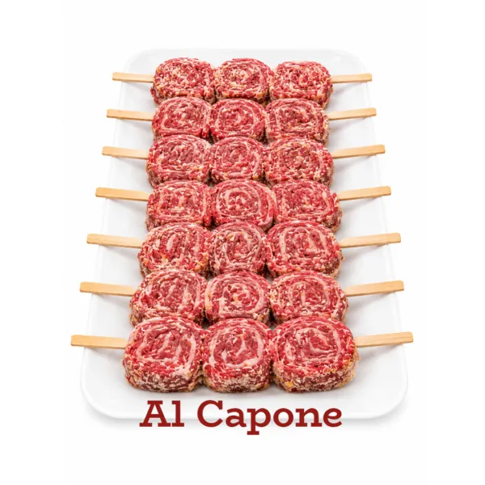
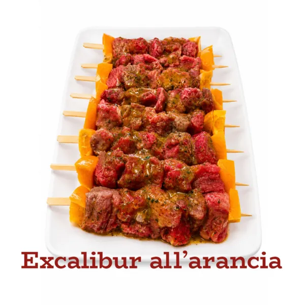
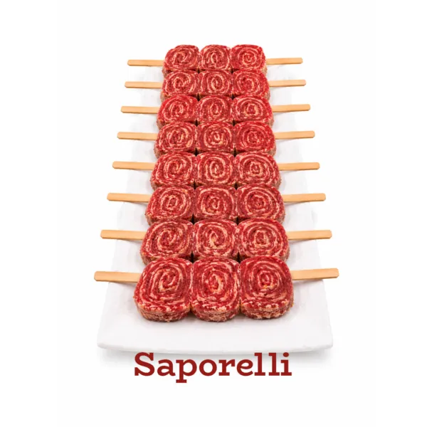
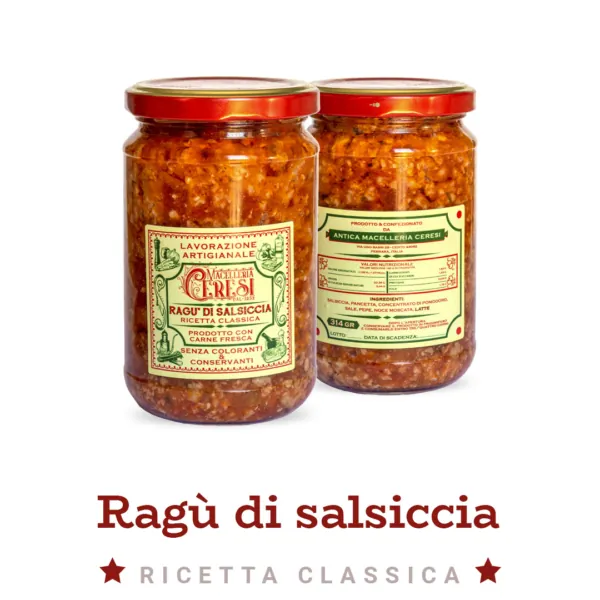
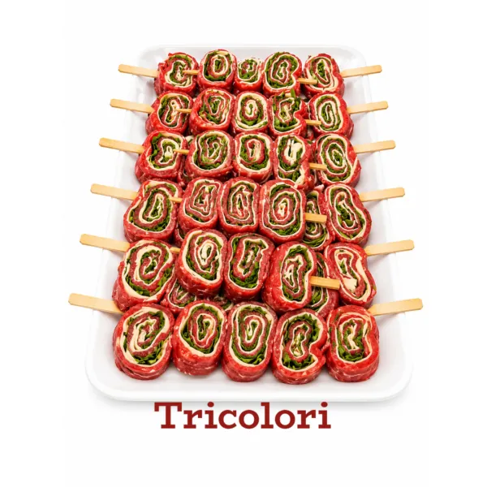
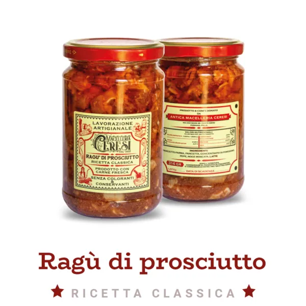
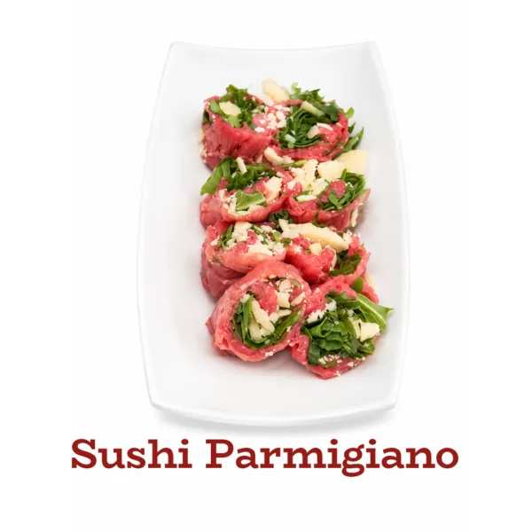
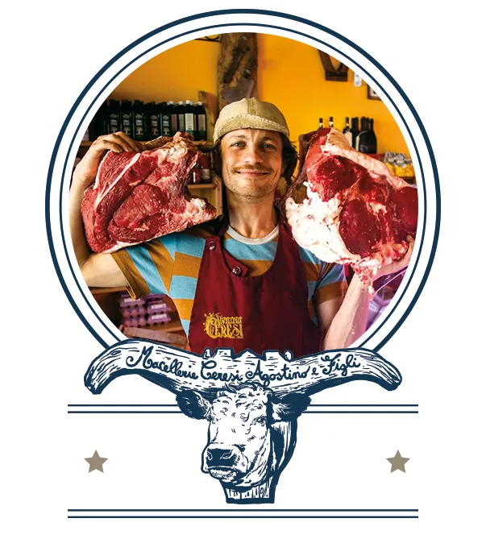

Dal 1852 · quinta generazione
La bottega di famiglia, a casa vostra.
Ragù fatti in bottega e spiedini pronti da cuocere, con carne italiana. Spedizione express, gratis sopra 199 €.

Al Caponecoppone di maiale e lardo di Colonnata7,75 €Carne italianaLavorazione artigianaleRagù fatti in bottegaSpiedini pronti da cuocereSushi di carpaccioCento · FerraraCinque generazioniCarne italianaLavorazione artigianaleRagù fatti in bottegaSpiedini pronti da cuocereSushi di carpaccioCento · FerraraCinque generazioni
Gratis sopra 199 €altrimenti 21,90 € in tutta Italia
Spedizione expresspreparazione 24–48 ore, partenze lun–mer
Sottovuotoo in atmosfera protettiva
Ritiro gratuitoin bottega, Via Ugo Bassi 29, Cento
I reparti
Cosa trovate nello shop
Dalla bottega
I più comodi da avere in frigo
Ragù alla bolognese9,90 € / vasettoAcquista

Excalibur all’arancia8,27 € / spiedinoAcquistaSushi pistacchio e pecorino8,00 €Acquista
Saporrelli9,30 € / spiedinoAcquista
Ragù di salsiccia9,90 € / vasettoAcquista
Tricolori7,53 € / spiedinoAcquista
Ragù di prosciutto9,90 € / vasettoAcquista
Sushi Parmigiano 36 mesi8,00 €AcquistaChi siamo
Cinque generazioni di macellai
La famiglia Ceresi tramanda il mestiere da padre in figlio. Oggi Marcello e i suoi fratelli portano avanti la bottega di Cento con nuovi servizi, come i piatti pronti e lo shop online.
La nostra storia
Passate in bottega
Via Ugo Bassi 29, Cento (Ferrara). Il ritiro degli ordini in negozio è gratuito.
Qui le recensioni dei clienti (sulla home del sito ce ne sono già due, firmate: da riportare con il testo originale)